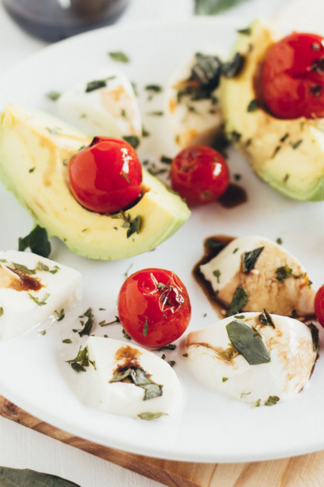
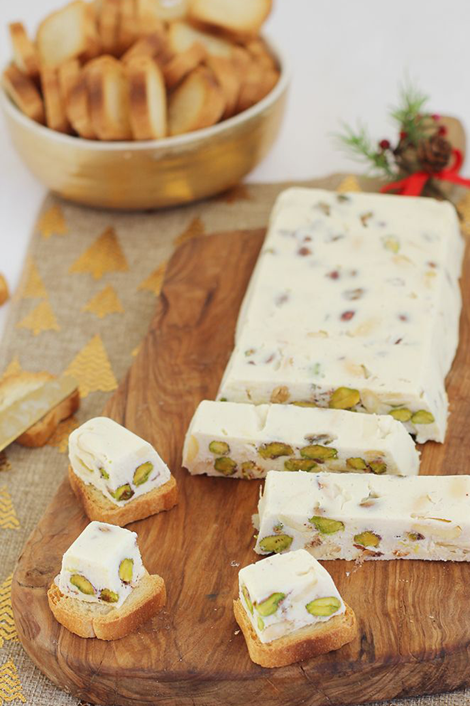
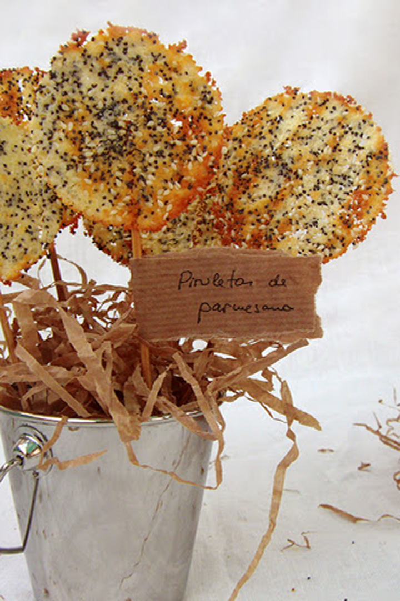
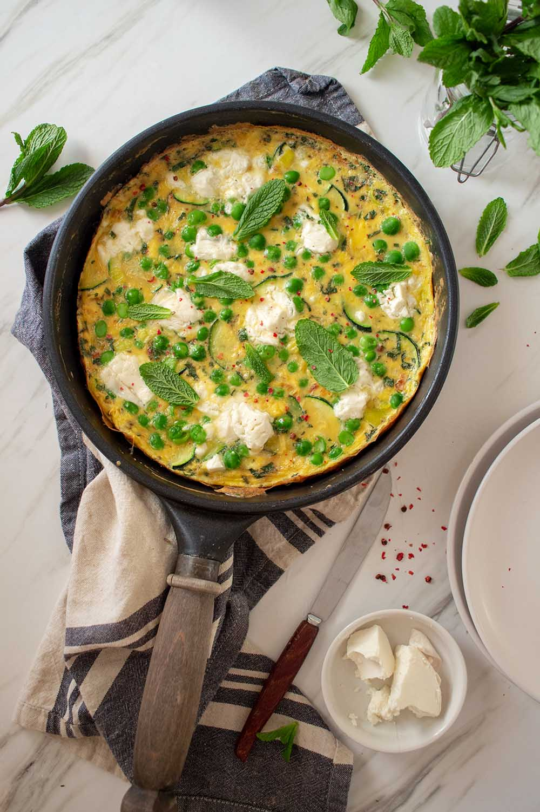
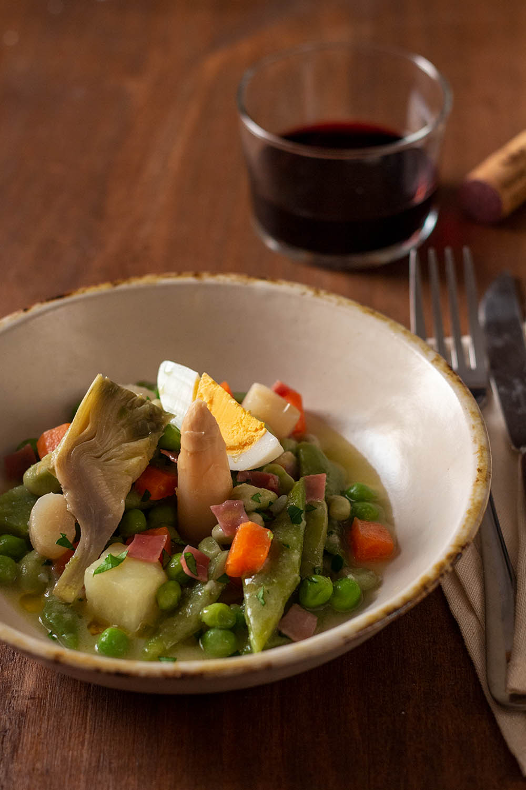
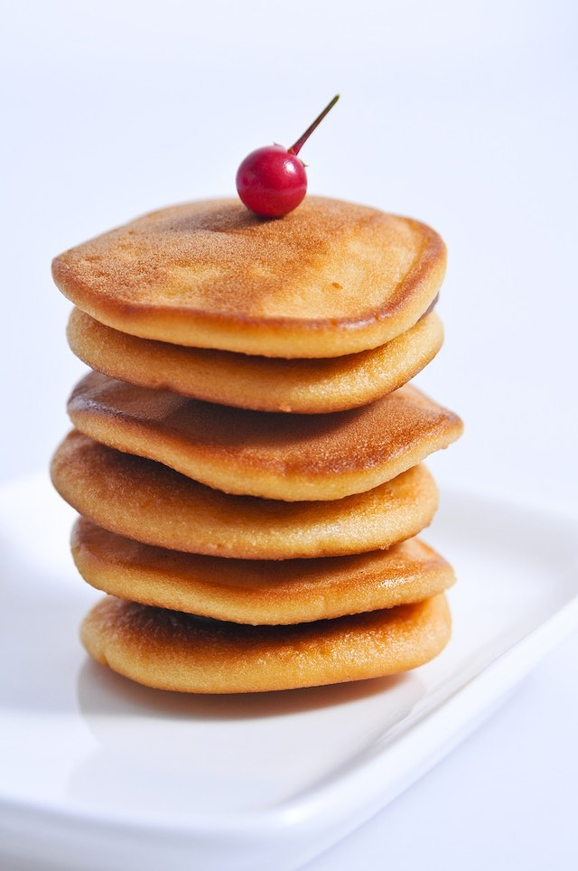
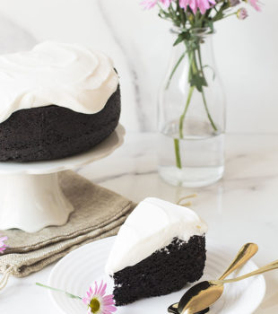

Busca aqui que tipo de plato quieres Entrantes Ensalada de aguacate Turrón salado Piruletas de parmesano Platos principales Frittata de calabacín, guisantes y queso de cabra Menestra de verduras a la Riojana Postres Dorayakis Tarta Guinness
Ensalada de aguacate  Turrón salado de queso y frutos secos  Piruletas de parmesano  Frittata de calabacín, guisantes y queso de cabra  Menestra de verduras a la Riojana  Dorayakis  Tarta Guinness 
Aqui puedes ver los post más visitados Frittata de calabacín, guisantes y queso de cabra Piruletas de parmesano Dorayakis